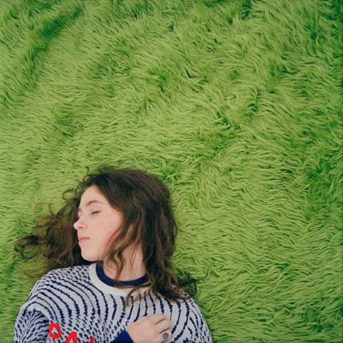

diary 001 — EP

Clairo’s first EP, diary 001, is a classic mix of bedroom pop topped with indie spunk. Four out of six songs on the EP took off on TikTok, captivating young listeners. It reminds you of yearning in your late teens. It has an addictive beat that keeps the listener wanting more from Clairo.
Favorite track: “4EVER”
The song is upbeat and catchy, but it is also about the uncanny feeling of going to college. Cottrill wrote this song during her first year at Syracuse University, so it resonates.